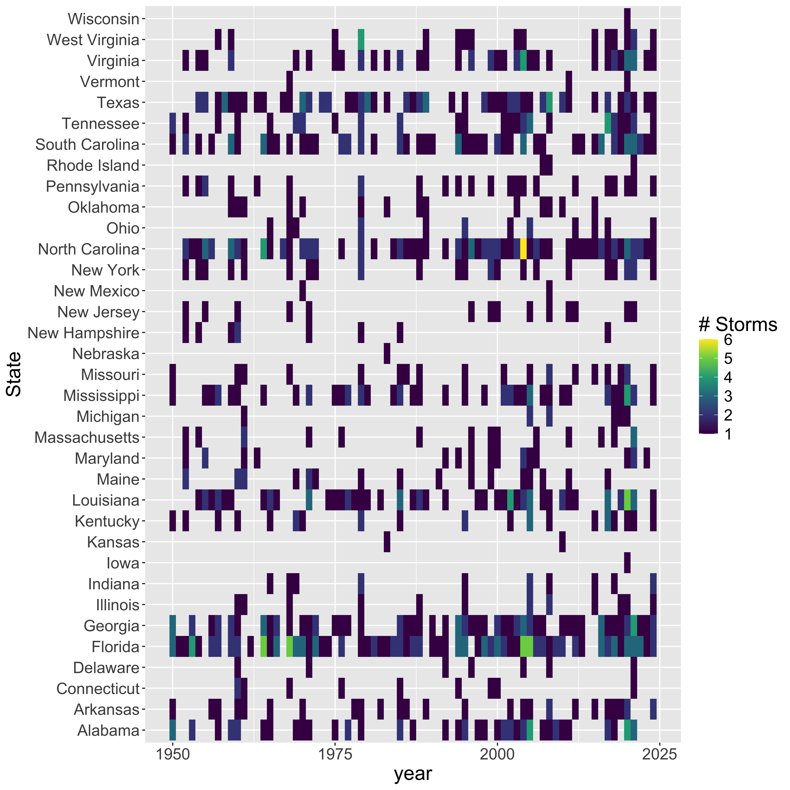

Tracking Hurricanes!
Analyze historical storm data from NOAA
Reading
- Overview of the International Best Track Archive for Climate Stewardship (IBTrACS)
- Performing Spatial Joins with sf
Tasks
- Write a .Rmd script to perform the following tasks
- Intersect the storms with US states to quantify how many storms in the database have hit each state.
Libraries & Data
library(sf)
library(tidyverse)
library(ggmap)
library(rnoaa)
library(spData)
data(world)
data(us_states)Objective
In this case study you will download storm track data from NOAA, make
a summary plot, and quantify how many storms have hit each of the United
States. This will require you to use a spatial join
(st_join).
Your goal
# Download zipped data from noaa with storm track information
dataurl="https://www.ncei.noaa.gov/data/international-best-track-archive-for-climate-stewardship-ibtracs/v04r00/access/shapefile/IBTrACS.NA.list.v04r00.points.zip"
tdir=tempdir()
download.file(dataurl,destfile=file.path(tdir,"temp.zip"))
unzip(file.path(tdir,"temp.zip"),exdir = tdir) #unzip the compressed folder
storm_data <- read_sf(list.files(tdir,pattern=".shp",full.names = T))Your desired figure looks something like the following:

| state | storms |
|---|---|
| Florida | 86 |
| North Carolina | 66 |
| Georgia | 58 |
| Texas | 54 |
| Louisiana | 52 |
Steps
- Use the code above to download the storm data and create an object
called
storm_data - Wrangle the data
- Filter to storms 1950-present with
filter() - Use
mutate_if()to convert-999.0toNAin all numeric columns with the following command from thedplyrpackage:mutate_if(is.numeric,function(x) ifelse(x==-999.0,NA,x)) - Use the following command to add a column for decade:
mutate(decade=(floor(year/10)*10)) - Use
st_bbox()to identify the bounding box of the storm data and save this as an object calledregion.
- Filter to storms 1950-present with
- Make the first plot
- Use
ggplot()to plot theworldpolygon layer and add the following: - add
facet_wrap(~decade)to create a panel for each decade - add
stat_bin2d(data=storms,aes(y=st_coordinates(storms)[,2],x=st_coordinates(storms)[,1]),bins=100) - use
scale_fill_distiller(palette="YlOrRd",trans="log",direction=-1,breaks = c(1,10,100,1000))to set the color ramp - use
coord_sf(ylim=region[c(2,4)],xlim=region[c(1,3)])to crop the plot to the region.
- Calculate table of the five states with most storms.
- use
st_transformto reprojectus_statesto the reference system of thestormsobject (you can extract a CRS from a sf object withst_crs(storms) - Rename the
NAMEcolumn in the state data tostateto avoid confusion with storm name usingselect(state=NAME) - Perform a spatial join between the storm database and the states
object with:
storm_states <- st_join(storms, states,join = st_intersects,left = F). This will ’add` the state to any storm that was recorded within that state. - Use
group_by(state)to group the next step by US state - use
summarize(storms=length(unique(NAME)))to count how many unique storms occurred in each state. - use
arrange(desc(storms))to sort by the number of storms in each state - use
slice(1:5)to keep only the top 5 states ```
- use
Try to replicate the following graphic using the data you transformed above.

Can you sort the rows (states) in order of storm frequency (instead of alphabetical)?